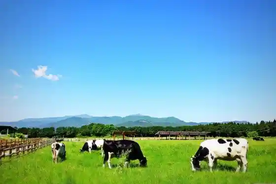
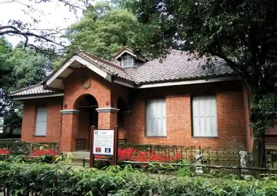
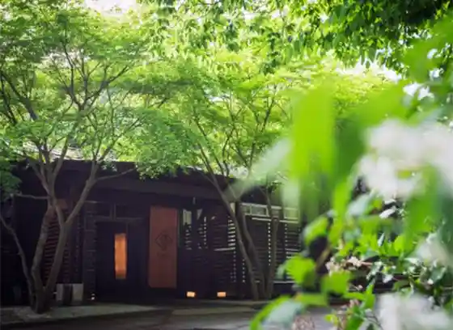
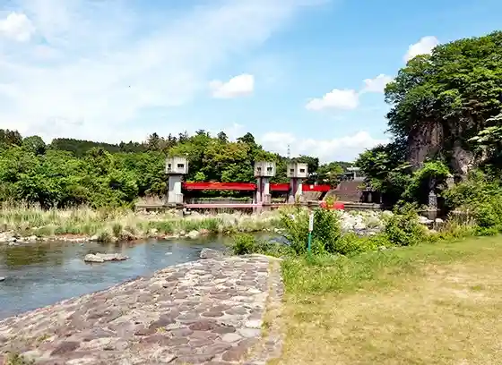

Chiizu Garden Shiobara Kohii
Nasushiobara, Tochigi · 0287-35-3555 · Official / source link
Nasu Sembon Matsu Ranch
Nasushiobara, Tochigi · 0287-36-1025 · Official / source link

Oyama Memorial Museum (Tochigi Prefectural Nasu Taku Yo Kotogakko Oyama Nojo Nai)
Nasushiobara, Tochigi · 0287-36-1225 · Official / source link

Ita Shitsu Bettei Ritoriito SPA Wayaku Kusa
Nasushiobara, Tochigi · 0287-69-0666 · Official / source link

Nasu Sosui Park
Nasushiobara, Tochigi · Official / source link

Furusato Nishinasu Sanchoku Kai no Village Resutoran Sosui Iori
Nasushiobara, Tochigi · 0287-37-8201 · Official / source link
Hoko Hekireki Falls Hoko Hekireki no Tsuribashi
Nasushiobara, Tochigi · 0287-32-2914 · Official / source link
Raitei Falls Raitei no Tsuribashi
Nasushiobara, Tochigi · 0287-32-2914 · Official / source link
Shiobara Onsen no Kudamo no Ya Kafe Tori no Chaya Fujiya
Nasushiobara, Tochigi · 0287-32-2314 · Official / source link
Ramen Yama Kichi Shiobara Main Shop
Nasushiobara, Tochigi · 0287-48-7090 · Official / source link
Sembon Matsu Ranch The PURE MILK Ice-cream (Pyuamirukuaisukuriimu)
Nasushiobara, Tochigi · 0287-36-1025 · Official / source link
Nasu Sembon Matsu Ranch Ichigo Sono
Nasushiobara, Tochigi · 080-7719-1515 · Official / source link
Oishii Yakuzen Shiro Botan
Nasushiobara, Tochigi · 0287-62-0601 · Official / source link
DEAR, FOLKS & FLOWERS
Nasushiobara, Tochigi · Official / source link
TOMIGAYA Letterpress KUROISO / Tomigatani Retapuresu Kuroiso
Nasushiobara, Tochigi · 0287-73-8942 · Official / source link
Nasushiobara Library Miruru
Nasushiobara, Tochigi · 0287-63-9031 · Official / source link
BARSMITH
Nasushiobara, Tochigi · 0287-74-2825 · Official / source link
Oku Nasu Taisho Village Yukino Yu Onsen
Nasushiobara, Tochigi · 0287-69-1126 · Official / source link
Hantamaunten Shiobara
Nasushiobara, Tochigi · 0287-32-4580 · Official / source link
Ki no Mata Gorge
Nasushiobara, Tochigi · 0287-62-7156 · Official / source link
Hako no Mori Purei Park
Nasushiobara, Tochigi · 0287-32-3018 · Official / source link
Historic Site Limestone Cave no Genzo Kutsu
Nasushiobara, Tochigi · 0287-32-2338 · Official / source link
Imai Ya Seika
Nasushiobara, Tochigi · 0287-32-2301 · Official / source link
Shiobaraonsen Yu Tsu Ho Village
Nasushiobara, Tochigi · 0287-32-3101 · Official / source link
Nasu Garden Autoretto
Nasushiobara, Tochigi · 0287-65-4999 · Official / source link
Nichi Shio Momiji Line
Nasushiobara, Tochigi · 0288-22-1525 · Official / source link
Gasutohofu Yume Mokko
Nasushiobara, Tochigi · 0287-32-5111 · Official / source link
Tenno no Kan Memorial Park
Nasushiobara, Tochigi · 0287-32-4037 · Official / source link
Kyu Aoki Ie Nasu Bettei
Nasushiobara, Tochigi · 0287-63-0399 · Official / source link
Oedo Onsen Monogatari Premium Hotel Nyu Shiobara
Nasushiobara, Tochigi · 050-3615-3456 · Official / source link
Yutoriro Nasushiobara
Nasushiobara, Tochigi · 0570-005-301 · Official / source link
O Kashi Tsukasa Tokoro Meijiya
Nasushiobara, Tochigi · 0287-62-0444 · Official / source link
N’s YARD
Nasushiobara, Tochigi · 0287-73-5711 · Official / source link
Nin Ki So Wotsumugu Yado Sai Tsumugi
Nasushiobara, Tochigi · 0287-31-1150 · Official / source link
TAOYA Nasushiobara
Nasushiobara, Tochigi · 050-3852-4558 · Official / source link
Bihada no Yu to Kutsurogi no Yado Koun So
Nasushiobara, Tochigi · 0287-32-2414 · Official / source link
Yu Ttari no Yado Matsu Momiji Ro Matsuya
Nasushiobara, Tochigi · 0287-32-2003 · Official / source link
Oku Shiobara Kogen Hotel
Nasushiobara, Tochigi · 0287-32-2464 · Official / source link
Yumori Tanaka Ya
Nasushiobara, Tochigi · 0287-32-3232 · Official / source link
Hito no Yado Moto Izumidate
Nasushiobara, Tochigi · 0287-32-3155 · Official / source link
Hito Nigori Yu no Yado Kei Kumo Kaku
Nasushiobara, Tochigi · 0287-32-2361 · Official / source link
Ebisuya
Nasushiobara, Tochigi · 0287-32-3221 · Official / source link
Tote Yaki
Nasushiobara, Tochigi · 0287-32-4000 · Official / source link
NASU WINE
Nasushiobara, Tochigi · 0287-62-0548 · Official / source link
Ita Shitsu Onsen
Nasushiobara, Tochigi · 0287-62-7156 · Official / source link
Kurenai no Tsuribashi
Nasushiobara, Tochigi · 0287-32-4000 · Official / source link
Numa Hara Marsh
Nasushiobara, Tochigi · 0287-62-7156 · Official / source link
Nature Ko Kome
Nasushiobara, Tochigi · 0287-64-3511 · Official / source link
Aji Koi Tomato
Nasushiobara, Tochigi · 0287-36-0890 · Official / source link
Tokiwa Hotel
Nasushiobara, Tochigi · 0287-32-3251 · Official / source link
Kodama Baths Yamaguchi Ya Ryokan
Nasushiobara, Tochigi · 0287-32-2051 · Official / source link
Hotel Oruri
Nasushiobara, Tochigi · 0287-32-5500 · Official / source link
Wafu Ryokan Matsu no I So
Nasushiobara, Tochigi · 0287-32-2164 · Official / source link